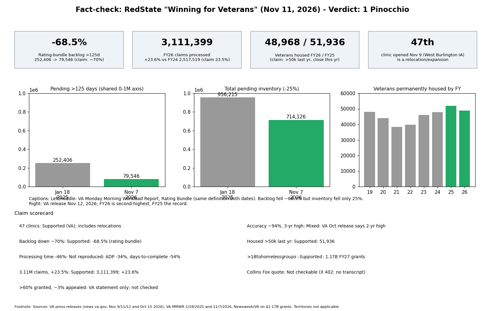

Fact-check: RedState, "Winning for Veterans" (Nov 11, 2026)

Mostly accurate, but VA-sourced and spun: 1 Pinocchio
The piece is an opinion column that repeats VA's Veterans Day press release. Its core numbers check out against VA's own workload data: the backlog of claims pending over 125 days fell 68.5% (252,406 on Jan 18, 2025 to 79,546 on Nov 7, 2026, Rating Bundle), matching "nearly 70%". FY2026 claims processed were 3,111,399, +23.6% on FY2024's 2,517,519 (claim: 23.5%). VA housed 51,936 veterans in FY2025 and 48,968 in FY2026.
- Not reproduced: "processing time down 46%". Rating Bundle average days pending fell 34% (100.3 to 66.0) and average days to complete fell 54-58%; no metric I found gives exactly 46%.
- Misleading framing: total pending inventory fell only 25% (956,215 to 714,126). The backlog was under 70,000 in July 2026 (Legion report, 74% cut) and has risen to 79,546. The "47 new clinics" includes relocations: the 47th (West Burlington, Iowa) replaces a clinic opened in 2021. Published on Veterans Day, not "ahead of" it.
- Inconsistent VA claim: accuracy "nearly 94%, highest in three years" (Nov 11 release) versus "highest in two years" (Oct 15 release).
- Not checkable here: Collins's Fox News quotes (X link returned HTTP 402; no transcript found). The grant rate (>60%) and ~3% appeal rate were not independently verified; they are VA statements.
- What would change the verdict: independent audit of VA accuracy or a different backlog definition.
Claim table
| Claim | Result | Source |
|---|
| 47 new clinics | Supported; includes relocation | VA Nov 9 release |
| Backlog down nearly 70% | True (-68.5%) | MMWR 1/18/2025, 11/7/2026 |
| Processing time down 46% | Not reproduced | MMWR Data sheet |
| 3.11M claims, +23.5% | True | VA Oct 15 release; FY24 2,517,519 |
| >60% granted, ~3% appealed | VA statement only | VA |
| Accuracy ~94% | Plausible; "3-year high" conflicts with VA's "2-year" | VA |
| >50,000 housed last year; close this year | True (51,936; 48,968) | VA Nov 12 release |
| >$1B to homeless groups | True ($1.17B, 680 organizations, FY27) | Newsweek / VA |
| Collins Fox quotes | Not checkable here | - |
Confidence: high on backlog, claims, housing; medium on processing time and accuracy.
Sources
- https://redstate.com/wardclark/2026/11/11/winning-for-veterans-trump-era-va-cuts-backlog-70-opens-47-clinics-ahead-of-veterans-day-n2209277
- https://news.va.gov/press-room/sec-collins-highlights-va-accomplishments-pledges-additional-improvements-ahead-of-veterans-day/
- https://news.va.gov/press-room/va-in-fy-2026-processes-the-most-claims-ever/
- https://news.va.gov/press-room/va-opens-47th-new-healthcare-facility-under-president-trump/
- https://news.va.gov/press-room/va-houses-nearly-49000-homeless-veterans-in-fy-2026/
- https://department.va.gov/vba/performance-analysis-integrity/detailed-claims-data/ (MMWR-01-18-2025.xlsm, MMWR-11-07-20261.xlsx)
- https://newsweek.com/map-shows-va-sending-1-17-billion-fight-veteran-homelessness-12443433
- https://www.legion.org/information-center/news/veterans-benefits/2026/july/va-benefits-claims-backlog-drops-below-70000-for-first-time-since-2020